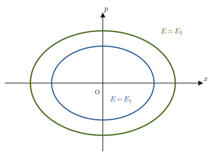
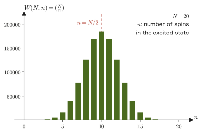

Chapter 48Microstates and the Principle of Equal A Priori Probability — The Microcanonical Distribution
If we toss one coin, it comes up heads or tails; if we roll one die, it shows one of the numbers from 1 to 6. Now, if we toss $100$ coins at the same time, which is more likely: the outcome “$50$ heads and $50$ tails,” or the outcome “$100$ heads and $0$ tails”? Everyone would intuitively answer that it is the former, but few people realize that the reason can be explained precisely by counting “in how many ways the coins can land.” Exactly the same idea can be used when we consider a box containing a gas—the details of where each gas molecule is and what velocity it has (the microstate) are enormous in number, but measurable quantities such as pressure and temperature (the macrostate) are merely the “average behavior” common to an overwhelming majority of those microstates.
In this chapter, on the stage of the space formed by the pairs of positions and momenta that we learned about in mechanics (Part I)—phase space (Chapters 45 and 46)—we introduce a method of counting a single microstate as a single point in phase space, and we build the foundation for the basic idea of statistical mechanics: “how does the macrostate look when an overwhelming majority of microstates are realized?” To this end, we first introduce two assumptions, the “ergodic hypothesis” and the “principle of equal a priori probability” (these are not proved; they are starting points that have been confirmed to be consistent with experimental facts), and we define the first probability distribution describing an isolated system—the microcanonical distribution. Finally, we practice actually counting microstates in three concrete examples: the two-level spin system, the Einstein solid, and the ideal gas.
- Understand the difference between microstates and macrostates through counting with coins and dice
- Define microstates on the phase space $\{x\},\{p\}$ of classical mechanics; understand, as a fact from quantum mechanics, that phase space is divided into cells of volume $h^{3N}$, and understand the factor $1/N!$ that keeps interchanges of identical particles from being counted as distinct
- Understand the statement of the ergodic hypothesis (time average = phase average) and its limitations
- Define the principle of equal a priori probability (the assumption that in an isolated system all allowed microstates are realized with equal probability) and the microcanonical distribution
- Actually count (or calculate) the number of states for the two-level spin system, the Einstein solid, and the ideal gas
- Understand the relation between the number of states $W$ in the energy shell $[E,E+\Delta E]$ and the number of states $\Omega(E)$ with energy at most $E$
Source notes: Yasuhide Mochizuki, Physics Notes: Statistical Mechanics, pp. 5–6.
48.1 Microstates and Macrostates
Consider an experiment in which $4$ coins are tossed at the same time. So that we can tell the coins apart, we label them with serial numbers from $1$ to $4$. A result that specifies completely “which coins are heads and which are tails”—for example, “coins $1$ and $3$ are heads, and coins $2$ and $4$ are tails”—we will call in this chapter a microstate. On the other hand, coarse information that ignores the distinction between individual coins, namely “how many heads came up”—for example, “$2$ heads”—we call a macrostate. The arrangements of heads and tails, coin by coin (microstates), number $2^4=16$, but only $6$ of them correspond to the macrostate “$2$ heads”—we will verify this later in Example 48.1.
The very same distinction is meaningful for a collection of gas molecules as well. The state in which the position and velocity of every single gas molecule are specified is a microstate, and the set of a few quantities that can be measured in the laboratory with a thermometer or a pressure gauge, such as pressure, volume, and temperature, is a macrostate. Since there are as many as $N_{\mathrm A}\approx6.02\times10^{23}$ gas molecules per $1\ \mathrm{mol}$, we cannot write down the microstates one by one concretely. However, just as in the coin example, it is possible to count “how many microstates correspond to a given macrostate”—or, for continuous quantities, to measure it as a “volume”—and this is precisely the central task of statistical mechanics.
Definition 48.1: Microstates and macrostates
A microstate is the state of a system obtained by specifying completely the state of every element that constitutes the system (each coin, in the case of coins; each molecule, in the case of a gas). A macrostate is a coarser description that ignores the details of the individual elements and specifies the system only by a few quantities describing it as a whole (the number of heads; pressure, volume, temperature, and other quantities that can be measured in experiments). In general, many microstates correspond to one macrostate. The number of microstates corresponding to a given macrostate is called the number of states (the symbols $\Omega$ and $W$ for the number of states are used differently in Sections 48.4–48.6, depending on what is being counted).
Example 48.1: Microstates and macrostates of four coins
Toss $4$ distinguishable coins (coins $1$ through $4$) at the same time. Taking the number of heads $n$ ($n=0,1,2,3,4$) as the macrostate, find the number of microstates (arrangements of heads and tails) corresponding to each macrostate. Also verify that their sum agrees with the total number of microstates.
Solution. Each of the $4$ coins has $2$ possibilities, heads or tails, and the coins are distinguishable, so by the product rule the total number of microstates (arrangements) is $2^4=16$. The number of microstates with exactly $n$ heads is the number of ways to choose which $n$ of the $4$ coins are heads; that is, it is given by the binomial coefficient (the combinations $_n\mathrm{C}_r$ of University Mathematics, Section 13.5; in this book we write $\binom{4}{n}={}_4\mathrm{C}_n$):
$$ \binom{4}{n}=\frac{4!}{n!\,(4-n)!} $$Evaluating this explicitly, we obtain
$$ \binom{4}{0}=1,\quad \binom{4}{1}=4,\quad \binom{4}{2}=6,\quad \binom{4}{3}=4,\quad \binom{4}{4}=1 $$The sum of these is, by the binomial theorem $\displaystyle\sum_{n=0}^{4}\binom{4}{n}=(1+1)^4=2^4=16$, indeed equal to the total number of microstates, $16$. The macrostate with two heads ($n=2$) corresponds to the $6$ microstates $1$-$2$, $1$-$3$, $1$-$4$, $2$-$3$, $2$-$4$, $3$-$4$ (which $2$ coins are heads), and we see that this is a macrostate far more likely to be realized than “$0$ heads” or “$4$ heads” (each of which has only $1$ microstate).
Example 48.2: The sum of two dice — the number of microstates for each macrostate
Roll two distinguishable dice (one red and one blue) at the same time. Taking the sum of the two numbers as the macrostate and the pair (red number, blue number) as the microstate, how many microstates correspond to each of the sums $2,3,\dots,12$? Which sum is the most likely to be realized?
Solution. The red number $a$ and the blue number $b$ each have $6$ possibilities, namely $1$ through $6$, so by the product rule the total number of microstates is $6\times6=36$. The number of microstates with sum $s$ is the number of pairs $(a,b)$ satisfying $a+b=s$; for example, for the sum $7$ the pairs are
$$ (1,6),\ (2,5),\ (3,4),\ (4,3),\ (5,2),\ (6,1) $$that is, $6$ ways, while for the sum $2$ there is only $1$ way, $(1,1)$. In general, for $s\le7$ there are $s-1$ ways, namely $a=1,2,\dots,s-1$, and for $s\ge7$ there are $13-s$ ways (we counted the number of values of $a$ for which $b=s-a$ lies between $1$ and $6$). Putting everything together gives the following table.
| Sum $s$ | $2$ | $3$ | $4$ | $5$ | $6$ | $7$ | $8$ | $9$ | $10$ | $11$ | $12$ |
|---|---|---|---|---|---|---|---|---|---|---|---|
| Number of microstates | $1$ | $2$ | $3$ | $4$ | $5$ | $6$ | $5$ | $4$ | $3$ | $2$ | $1$ |
The total is $1+2+3+4+5+6+5+4+3+2+1=36$, which agrees with the total number of microstates. The sum that is most likely to be realized is $s=7$ ($6$ ways), which has the largest number of corresponding microstates; if each of the 36 microstates occurs with the same frequency, the probability that the sum is $7$ is $6/36=1/6$, and the probability that the sum is $2$ or $12$ is $1/36$. Just as in Example 48.1 with four coins, we see here again that “the macrostates in the middle have many corresponding microstates.”
Intuition: Why are there “frequently occurring macrostates”?
With $4$ coins, the macrostate “$2$ heads” has the largest number of microstates, $6$, while “$0$ heads” and “$4$ heads” have only $1$ each. As we increase the number of coins to $100$ and then $1000$, this bias becomes more and more extreme, and the number of microstates corresponding to the macrostate “roughly half heads” comes to account for almost all of the total (such as $2^{100}$). (We will actually count the case of 100 coins in the next Example 48.3, and confirm the general case of $N$ coins in Section 48.5 as a two-level system.) The reason that a gas is likely to be found “spread almost uniformly throughout the room,” and that the state “all the molecules gathered together in one corner of the room” is hardly ever observed, is the same: the number of microstates corresponding to the latter is smaller than that for the former by many orders of magnitude. This way of thinking—“in which macrostate are the overwhelming majority of microstates concentrated?”—is the foundation on which statistical mechanics understands entropy and thermal equilibrium.
Example 48.3: 100 coins — which is more likely, 50 heads or 100 heads?
Toss 100 distinguishable coins at the same time. Find (1) the total number of microstates, (2) the number of microstates in which exactly 50 coins are heads (and 50 are tails), and (3) the number of microstates in which all 100 coins are heads, and compare the fraction in (2) with the fraction in (3).
Solution. (1) Each coin has $2$ possibilities, heads or tails, so the total number of microstates is $2^{100}\approx1.27\times10^{30}$. (2) The number of ways to choose which 50 of the 100 coins are heads is
$$ \binom{100}{50}=\frac{100!}{50!\,50!}\approx1.01\times10^{29} $$Therefore, the fraction of “exactly 50 heads” is
$$ \frac{\binom{100}{50}}{2^{100}}\approx\frac{1.01\times10^{29}}{1.27\times10^{30}}\approx0.080 $$that is, about $8.0\%$. (3) The only arrangement with 100 heads is “all heads,” only $1$ way, so its fraction is a mere $1/2^{100}\approx7.9\times10^{-31}$. The ratio of the number of microstates in (2) to that in (3) is $1.01\times10^{29}$, so “50 heads” is $10^{29}$ times more likely. Note that the probability of exactly 50 heads is only about $8\%$ because the probability is spread among nearby macrostates such as $41$ or $52$ heads; if we count up to the probability that the number of heads lies between $40$ and $60$, it is about $96\%$. In this way, as $N$ becomes large, almost all of the microstates are concentrated in the macrostates near $N/2$ (in Section 48.5 we will see how sharp this concentration becomes).
48.2 Phase Space in Classical Mechanics — Counting Microstates
The microstate of a coin was a choice among a finite number of options, “heads or tails,” but the microstate of a mechanical system (particles, gas molecules, and so on) is specified by continuously varying quantities—positions and momenta. So let us first recall the phase space that we have already introduced in mechanics (Section 45.5). For a system with $1$ degree of freedom (for example, the one-dimensional motion of a single particle connected to a wall by a spring), the state at time $t$ is represented by the pair $(x,p)$ of the position $x(t)$ and the momentum $p(t)=m\dot x(t)$—that is, by one point in the $x$-$p$ plane (the phase space). As the system evolves in time according to the equation of motion, this point moves in the plane, tracing out a single curve (a phase trajectory).
Definition 48.2: Phase space
For a mechanical system with $f$ degrees of freedom, the $2f$-dimensional space whose axes are the generalized coordinates $q_1,\dots,q_f$ and the generalized momenta $p_1,\dots,p_f$ is called the phase space. One state of the system (a set of values of all the coordinates and momenta) corresponds to one point in the phase space. This is the idea that we already used when we introduced the Hamiltonian formalism in Chapter 45; in this chapter we use it for the purpose of “counting microstates.”
For example, the Hamiltonian of a one-dimensional harmonic oscillator of mass $m$ and spring constant $k$ (Chapter 7) is $H=p^2/(2m)+\frac12kx^2$ (Section 45.3). When the energy is kept at a constant value $E$ (the system is isolated), the set of points of constant energy in the phase space is the curve satisfying the equation $p^2/(2m)+\frac12kx^2=E$, that is, an ellipse like the one in Figure 48.1. The larger the energy $E$, the larger this ellipse becomes—this is the simplest example of an idea we will use repeatedly in this chapter: “a system with larger energy occupies a wider region of the phase space.”

In a system made of an enormous number of molecules, such as a gas, the dimension of the phase space becomes tremendously large. Suppose that $n\ \mathrm{mol}$ of a monatomic ideal gas is contained in a box of volume $V$. There are $N=nN_{\mathrm A}$ molecules ($N_{\mathrm A}$ is the Avogadro constant), and each molecule $i=1,\dots,N$ has a position $\bm{r}_i=(x_i,y_i,z_i)$ and a momentum $\bm{p}_i=(p_{ix},p_{iy},p_{iz})$ in three-dimensional space. We write the positions and momenta of all the molecules together as
$$ \{x\}=(x_1,y_1,z_1,x_2,\dots,z_N),\qquad \{p\}=(p_{1x},p_{1y},p_{1z},p_{2x},\dots,p_{Nz}) $$(each is a set of $3N$ real numbers). One microstate of this gas corresponds to one point in the phase space that collects the positions and momenta of all $N$ molecules together—a space of dimension $2\times3N=6N$. For $1\ \mathrm{mol}$ we have $N\approx6.02\times10^{23}$, so $6N$ is a staggeringly huge number, of the order of $10^{24}$ (we check this concretely in Example 48.6). We cannot draw this many dimensions in a figure, but the rule itself—“six numbers, $x,y,z,p_x,p_y,p_z$, are needed for each molecule”—is the same whether there is one molecule or $N$ molecules: even when the dimension increases, the idea remains the same.
Let us summarize in a table how the dimension grows as we vary the number of particles and the dimension of space.
| System | Position components | Momentum components | Dimension of phase space |
|---|---|---|---|
| 1 particle in 1D | $x$ | $p_x$ | $2$ |
| 1 particle in 3D | $x,y,z$ | $p_x,p_y,p_z$ | $6$ |
| 2 particles in 3D | $x_1,y_1,z_1,x_2,y_2,z_2$ | $p_{1x},\dots,p_{2z}$ | $12$ |
| $N$ particles in 3D | $3N$ components | $3N$ components | $6N$ |
Each additional particle adds six dimensions—three for position and three for momentum. That is the whole rule.
If we write the infinitesimal volume element of this phase space as $\dd\{x\}=\dd x_1\dd y_1\dd z_1\cdots\dd z_N$ and $\dd\{p\}=\dd p_{1x}\dd p_{1y}\dd p_{1z}\cdots\dd p_{Nz}$ (each is the integrand part of a $3N$-fold integral, obtained by extending the idea of the multiple integral in University Mathematics, Section 7.1 directly to $3N$ variables), then we can naively regard the number of microstates contained in this volume element as
\begin{equation} \dd\Omega=\dd\{x\}\,\dd\{p\} \label{eq:48-domega-classical} \end{equation}This is a naive way of counting, in which the “volume” of the phase space is directly proportional to the “number of microstates.” (However, $\dd\{x\}\,\dd\{p\}$ has the dimension of “length × momentum” raised to the $3N$th power, so it is not yet a true count (a dimensionless number). Dividing by $h^{3N}$ makes it a dimensionless number, as we see below.)
Caution: Why can't phase space be “counted” as it stands?
Eq. \eqref{eq:48-domega-classical} is a natural expression from the standpoint of classical mechanics, in which positions and momenta take continuous real values, but then an “infinite number” of points (microstates) are packed into the infinitesimal volume element, so $\Omega$ cannot be counted as a finite integer. Moreover, $\dd\{x\}\,\dd\{p\}$ is a quantity with a dimension (its unit is $(\mathrm{J\,s})^{3N}$), not a “number” (a dimensionless count).
According to quantum mechanics, the position $x$ and the momentum $p$ cannot be determined simultaneously with arbitrary accuracy, and they necessarily have fluctuations $\Delta x,\Delta p$ (Heisenberg's uncertainty principle). From a thought experiment, Heisenberg gave the estimate that the product of the fluctuations cannot become smaller than about $h$:
$$ \Delta x\,\Delta p\sim h $$($h$ is the Planck constant, $h=6.626\,070\,15\times10^{-34}\ \mathrm{J\,s}$, an exact (defined) value). The exact inequality is $\Delta x\,\Delta p\ge\hbar/2$ ($\hbar=h/(2\pi)$, read “h-bar” and called the reduced Planck constant). Both are only a guide to the fact that “regions of the $x$-$p$ plane with an area smaller than about $h$ cannot be distinguished any further”; this estimate alone does not explain why the value $h$ itself comes out exactly. It is known that when the states are counted accurately in quantum mechanics (for example, by counting the standing waves of a particle in a box or the energy levels of a harmonic oscillator), there is exactly one quantum state per area $h$ of the $x$-$p$ plane (we verify this for the harmonic oscillator in Example 48.4). Since this book does not treat quantum mechanics itself, we accept this result as a fact.
Let us apply this fact to the whole $6N$-dimensional phase space. “One state per area $h$” is a relation for one pair of a position and a momentum (one of the directions $x,y,z$ and the corresponding momentum component), and $h$ has the dimension of “length $\times$ momentum.” For $1$ molecule there is one such pair of a position component and a momentum component for each of the three directions $x,y,z$, so the volume of the cell occupied by one microstate in the phase space of one molecule (six-dimensional) is $h\times h\times h=h^3$. With $N$ molecules, the same argument is repeated $N$ times, so the volume of the cell occupied by one microstate in the whole $6N$-dimensional phase space is
\begin{equation} h^3\times h^3\times\cdots\times h^3=h^{3N} \label{eq:48-cell-volume} \end{equation}(that is, $h^3$ multiplied $N$ times). In other words, the $6N$-dimensional phase space is divided into small cells (squares of a grid) of volume $h^{3N}$, and the innumerable points inside one cell (distinct points in classical mechanics) are all regarded, quantum mechanically, as one and the same microstate.
Therefore, the number of microstates contained in an infinitesimal volume element of the quantized phase space is obtained by dividing the naive volume of Eq. \eqref{eq:48-domega-classical} by the volume $h^{3N}$ of one cell in Eq. \eqref{eq:48-cell-volume}:
$$ \dd\Omega=\frac{\dd\{x\}\,\dd\{p\}}{h^{3N}} $$Let us check the dimensions: $[\dd x\,\dd p]=\mathrm{m}\cdot\mathrm{kg\,m/s}=\mathrm{kg\,m^2/s}=\mathrm{J\,s}$ (we used $\mathrm{J}=\mathrm{kg\,m^2/s^2}$), which agrees with the unit $\mathrm{J\,s}$ of $h$. Hence $\dd x\,\dd p/h$ is a dimensionless number and has meaning as a true count.
Example 48.4: Area of the phase space of a harmonic oscillator and the number of cells
For a one-dimensional harmonic oscillator of mass $m$ and angular frequency $\omega$ (Hamiltonian $H=\dfrac{p^2}{2m}+\dfrac12m\omega^2x^2$), (1) find the area $S(E)$ of the region of the $x$-$p$ plane formed by the states with energy at most $E$. (2) Find the “number of cells” obtained by dividing $S(E)$ by $h$, and compare it with the number of those energy levels $E_n=\left(n+\tfrac12\right)\hbar\omega$ ($n=0,1,2,\dots$) given by quantum mechanics that are at most $E$.
Solution. (1) Rewriting $H\le E$, we obtain
$$ \frac{x^2}{2E/(m\omega^2)}+\frac{p^2}{2mE}\le1 $$which is the interior of an ellipse with semi-axis $a=\sqrt{2E/(m\omega^2)}$ in the $x$ direction and semi-axis $b=\sqrt{2mE}$ in the $p$ direction. The area of an ellipse is $\pi ab$, so
$$ S(E)=\pi ab=\pi\sqrt{\frac{2E}{m\omega^2}\cdot2mE}=\pi\sqrt{\frac{4E^2}{\omega^2}}=\frac{2\pi E}{\omega} $$(here $\sqrt{4E^2/\omega^2}=2E/\omega$). (2) From $\hbar=h/(2\pi)$ we have $h=2\pi\hbar$, so the number of cells is
$$ \frac{S(E)}{h}=\frac{2\pi E/\omega}{2\pi\hbar}=\frac{E}{\hbar\omega} $$On the other hand, the values of $n$ satisfying $E_n=\left(n+\frac12\right)\hbar\omega\le E$ are those with $n\le E/(\hbar\omega)-\frac12$, so for $E\gg\hbar\omega$ their number is approximately $E/(\hbar\omega)$. The two ways of counting agree—that is, the cell size $h$, “one quantum state per area $h$ of the phase space,” is consistent with the counting of the levels in quantum mechanics.
Example 48.5: Estimating the minimum cell for one molecule
For a molecule of mass $m=6.6\times10^{-26}\ \mathrm{kg}$ (about the mass of one argon atom), when the fluctuation of the position is (a) $\Delta x=1.0\times10^{-10}\ \mathrm{m}$ (about the size of an atom) or (b) $\Delta x=0.10\ \mathrm{m}$ (about the size of a container), estimate from $\Delta x\,\Delta p\sim h$ the fluctuation $\Delta p$ of the momentum and the fluctuation $\Delta v=\Delta p/m$ of the velocity. Also find the volume $h^3$ of the minimum cell in the phase space of one molecule in $3$ dimensions.
Solution. Substitute $h=6.626\times10^{-34}\ \mathrm{J\,s}$ into $\Delta p\sim h/\Delta x$. (a) $\Delta p\sim6.626\times10^{-34}/(1.0\times10^{-10})=6.6\times10^{-24}\ \mathrm{kg\,m/s}$, and converting to velocity, $\Delta v=\Delta p/m\sim6.6\times10^{-24}/(6.6\times10^{-26})=1.0\times10^{2}\ \mathrm{m/s}$. (b) $\Delta p\sim6.626\times10^{-34}/0.10=6.6\times10^{-33}\ \mathrm{kg\,m/s}$ and $\Delta v\sim1.0\times10^{-7}\ \mathrm{m/s}$. The more finely the position is specified, the coarser the specification of the momentum becomes; if the position is specified coarsely, as over a whole container, the momentum can be distinguished extremely finely. In either case, the volume of the cell occupied by one microstate in the phase space is fixed per direction by $\Delta x\,\Delta p\sim h$, so for one molecule in $3$ dimensions
$$ h^3=(6.626\times10^{-34}\ \mathrm{J\,s})^3\approx2.9\times10^{-100}\ \mathrm{J^3\,s^3} $$which is tremendously small. Hence, for a gas in a container of everyday size, the number of distinguishable cells is larger by many orders of magnitude (Example 48.12 will confirm that $1$ molecule alone has about $10^{30}$ cells).
Now, this is still not enough. The gas molecules are all particles of the same kind (for example, the same helium atoms) and are quantum mechanically “indistinguishable”—if we exchange molecule number 1 and molecule number 2, the state is physically exactly the same. However, the notation $\{x\},\{p\}$ uses the molecule numbers explicitly, so two points that differ only by the exchange of molecules 1 and 2 are counted twice, as different microstates.
Intuition: Not counting the exchange of identical particles as a duplicate
Let us think of a familiar example. On a desk there are two coins that are exactly alike in color and shape. The arrangement “coin 1 on the left and coin 2 on the right” and the arrangement “coin 2 on the left and coin 1 on the right” are different arrangements if we give the coins serial numbers (which cannot be seen on the coins), but to a person actually looking at the coins on the desk, both look like the same indistinguishable situation: “one coin on the left, one on the right.” The same is true of gas molecules: even if we exchange molecules of the same kind, the state observable in an experiment does not change. There are $N!$ rearrangements (permutations) of $N$ identical particles, so if we divide the number of microstates counted on the premise that they are “distinguishable” by $N!$ afterwards, we can correct it to the proper “indistinguishable” way of counting.
Definition 48.3: Volume element of the quantized phase space
For a system of $N$ identical particles, the number of microstates contained in the infinitesimal phase-space volume element $\dd\{x\}\,\dd\{p\}$ (distinguishable quantum mechanically, and not counting the exchange of identical particles as a duplicate) is defined as
\begin{equation} \dd\Omega=\frac{\dd\{x\}\,\dd\{p\}}{N!\,h^{3N}} \label{eq:48-domega-quantum} \end{equation}The factor $h^{3N}$ in the denominator is the quantum-mechanical partition of the phase space (the volume per cell), and $N!$ is the factor that keeps the exchange of the $N$ identical particles from being counted as a duplicate.
Example 48.6: Dimension of the phase space of $1\ \mathrm{mol}$ of gas
For $1\ \mathrm{mol}$ ($N=N_{\mathrm A}\approx6.02\times10^{23}$ molecules) of a monatomic gas, write down the dimension $6N$ of the phase space as a concrete number. Also find the dimension of the space of positions alone and that of momenta alone.
Solution. Each molecule needs coordinates of six dimensions in total, three of position and three of momentum, so for $N$ molecules the positions have $3N$ dimensions and the momenta have $3N$ dimensions, and the dimension of the phase space is
$$ 6N=6\times6.02\times10^{23}\approx3.6\times10^{24} $$The dimension of the space of positions alone (the configuration space) is $3N\approx1.8\times10^{24}$, and the dimension of the space of momenta alone is likewise $3N\approx1.8\times10^{24}$. To get a feeling for how large this number is, suppose we count one dimension per second. Finishing the count of $6N\approx3.6\times10^{24}$ dimensions takes $3.6\times10^{24}\ \mathrm{s}$; taking one year to be about $3.16\times10^{7}\ \mathrm{s}$, this is $3.6\times10^{24}/(3.16\times10^{7})\approx1.1\times10^{17}$ years, about $8\times10^{6}$ times the age of the universe (about 13.8 billion years). We see that even for the everyday amount of $1\ \mathrm{mol}$ of gas, the phase space is an ultra-high-dimensional space that can never be drawn directly.
Example 48.7: Counting two identical particles — checking the meaning of $N!$
In a one-dimensional box there are two particles of the same kind. The phase space (the $x$-$p$ plane) is divided into cells of area $h$, and suppose that there are many cells. (1) When the two particles are in different cells A and B, one in each, answer how the number of microstates differs between the case where the particles are regarded as distinguishable and the case where they are regarded as indistinguishable (identical particles). (2) Discuss what happens when both particles are in the same cell C.
Solution. (1) If the particles are distinguishable, “particle 1 in cell A and particle 2 in cell B” and “particle 1 in cell B and particle 2 in cell A” are counted as different arrangements, so the number of microstates is $2!=2$. If they are indistinguishable, exchanging the two particles gives physically the same state (the situation “one particle in cell A and one in cell B” itself does not change), so the number of microstates is $1$. Indeed, dividing the number $2$ for the distinguishable case by $N!=2!=2$ gives the number $1$ for the indistinguishable case.
(2) When both are in the same cell C, counting from the distinguishable standpoint, the arrangement “particles 1 and 2 both in cell C” does not change under exchange, so there is only $1$ possibility from the start, and counting from the indistinguishable standpoint there is also $1$. If we divided by $2!$ in this case, we would get the absurd number $1/2$. However, in a situation such as a gas, where the number of cells is larger by many orders of magnitude than the number $N$ of particles, the configurations in which two or more particles are in the same cell are negligibly few compared with those in which they are in different cells (as we will see in Example 48.12, even $1$ molecule alone has about $10^{30}$ cells). Therefore, the way of counting, “divide the number for the distinguishable case by $N!$,” is a good approximation.
How the factor $1/N!$ ultimately affects the calculation of the entropy (the Gibbs paradox) is treated in detail in Section 49.7.
Finally, let us confirm once more, with an intuitive figure, the property that we have already seen in the ellipses of Figure 48.1—that a system with larger energy has more microstates—this time for a collection of gas molecules. We keep the number $N$ of molecules the same and compare cases that differ only in energy.
48.3 The Ergodic Hypothesis — Time Averages and Phase Averages
So far, we have prepared a way of counting the microstates of a many-particle system such as a gas as “a point in a $6N$-dimensional quantized phase space.” However, what we can measure in the laboratory with a thermometer or a pressure gauge is not an individual microstate but a macroscopic quantity such as pressure or temperature. A measurement always takes a finite time, whereas the microstate of the system is constantly changing, through molecular collisions and the like, on a time scale far shorter than the time the measurement takes—a system in thermal equilibrium appears, macroscopically, not to change as time passes, but microscopically the individual microstates must be replacing one another in succession at a speed too fast for the eye to follow. Therefore, it is natural to regard the value obtained in a measurement as really “an average over the enormous number of microstates that the system passed through during the time the measurement took.”
In the theory of statistical mechanics, however, instead of actually following the time evolution, we take the approach of considering “a hypothetical collection of all the conceivable microstates corresponding to the same macrostate (the same $E,V,N$, etc.)—an ensemble, which means a ‘group’” and calculating the average within that collection (the phase average, discussed below). The assertion that these two averages—the time average, which follows the actual time evolution, and the phase average, which is calculated over the collection of microstates that can exist at a given instant—are equal is the ergodic hypothesis, one of the most fundamental assumptions of statistical mechanics.
Law 48.1: Ergodic hypothesis
For a system in thermal equilibrium, the time average and the phase average of a physical quantity are equal.
When a physical quantity $A$ can be written as $A(l(t))$, a function of the microstate $l(t)$ of the system (a point in phase space at time $t$), the time average is defined as the following limit, in which the measurement time $T$ is taken (in theory) to be infinitely long:
\begin{equation} \bar A_{\text{time}}=\lim_{T\to\infty}\frac{1}{T}\int_0^{T}A(l(t))\,\dd t \label{eq:48-time-average} \end{equation}$A(l(t))$ is a value determined by where the system is in phase space at time $t$ (namely $l(t)$), and, as in the left panel of Figure 48.4, taking the time average means adding up the values of $A$ at the points along the trajectory (integrating over time). The factor $1/T$ on the right-hand side is needed because, whereas the integral $\int_0^T A(l(t))\dd t$ itself grows larger the longer $T$ is taken (in general, even when $A$ is bounded), an “average” must be a value per unit time—for example, if $A(t)$ is a constant $A_0$, then without $1/T$ the right-hand side would become $A_0T\to\infty$, which does not hold up as a definition of an “average.” Multiplying by $1/T$ gives the correct answer $\bar A_{\text{time}}=A_0$.
The phase average, on the other hand, is defined for the collection (ensemble) of all the microstates corresponding to the same macrostate. Let $P_i$ be the probability that each microstate $i$ is realized (the definition of probability in University Mathematics, Section 13.4; $\sum_iP_i=1$), and let $A_i$ be the value that the physical quantity $A$ takes in that microstate. The phase average is then defined as the expectation value (University Mathematics, Section 14.1):
\begin{equation} \bar A_{\text{phase}}=\sum_iA_iP_i \label{eq:48-phase-average} \end{equation}(When the microstates are distributed over a continuous phase space, we replace the sum $\sum_i$ by an integral over phase space and the probability $P_i$ by the probability density $\rho(\{x\},\{p\})\dd\Omega$.) Here nothing has yet been assumed about how the probability $P_i$ (or the density $\rho$) is determined—the assumption that fixes it concretely for an isolated system is the principle of equal a priori probability, which we introduce in the next section, Section 48.4.
Math Tool: Review of expectation values
Eq. \eqref{eq:48-phase-average} is exactly the expectation value $E[A]=\sum_iA_iP_i$ of a discrete random variable (University Mathematics, Section 14.1). In the later chapters on statistical mechanics, “the statistical-mechanical average value of a physical quantity” is always calculated as an expectation value in this sense. We will use the properties of the expectation value (such as linearity, $E[aA+bB]=aE[A]+bE[B]$) repeatedly from here on, so if you have forgotten them, it would be good to reread Chapter 14 of University Mathematics.
Intuition: Thinking about the ergodic hypothesis with dice
Prepare a single die, keep rolling it hundreds of times, record the faces that come up, and compute their average—this corresponds to the “time average” (the way the state of the die is replaced one after another each time it is rolled corresponds to the time evolution of the system). On the other hand, prepare hundreds of identical dice, roll all of them together just once, record all the faces showing at that instant, and take the average—this corresponds to the “phase average” (the average over the collection of all conceivable states that exist at the same instant). For a fair die, whichever way the average is taken, it should approach the same value ($(1+2+3+4+5+6)/6=3.5$) as the number of rolls is increased—this is the intuitive picture of the “time average = phase average” asserted by the ergodic hypothesis.
Example 48.8: Confirming the ergodic hypothesis with dice
The average of the faces obtained when a single fair (unbiased) die is rolled $T=6000$ times in succession (the time average), and the average of the faces showing when $6000$ fair dice are rolled together just once (the phase average), are both expected theoretically to approach the same value. Find that value. Also simulate both using random numbers and confirm that they agree.
Solution. Each face $k=1,\dots,6$ comes up with the same probability $P_k=1/6$, so by Eq. \eqref{eq:48-phase-average} the expected value (the theoretical value corresponding to the phase average) is given by
$$ \bar A_{\text{phase}}=\sum_{k=1}^{6}k\cdot\frac16=\frac{1+2+3+4+5+6}{6}=\frac{21}{6}=3.5 $$If the individual trials are independent, the time average, too, converges to the same value $3.5$ as the number of trials $T\to\infty$, by the law of large numbers (the fact that when the same trial is repeated independently, the average approaches the expected value as the number of repetitions increases; in this book we use only the result). A Python example that simulates this with random numbers is shown below (using the library numpy).
import numpy as np
rng = np.random.default_rng(1) # fix the random seed (for reproducibility)
T = 6000
time_avg = rng.integers(1, 7, T).mean() # average of the faces from rolling one die 6000 times
phase_avg = rng.integers(1, 7, T).mean() # average of the faces from rolling 6000 dice once
print(time_avg, phase_avg)One example of the output is 3.4931666666666668 3.5275; both are close to $3.5$. The variance of the faces is $\sigma^2=35/12$ (standard deviation $\sigma\approx1.71$), so a rough measure of the scatter of an average of $6000$ values is $\sigma/\sqrt{6000}\approx1.71/77.5\approx0.022$, and the deviations of the above results from $3.5$ ($0.007$ and $0.028$) are of about this size. Note that this is an analogy based on the law of large numbers, and it is not a proof that the trajectory of a mechanical system fills phase space.
Discussion: For a system with one degree of freedom, time average = phase average holds trivially
For a system with one degree of freedom, such as a simple pendulum or a one-dimensional harmonic oscillator, phase space is the $x$-$p$ plane, the constant-energy surface (the set of points with energy $E$) is a single closed curve, and the trajectory simply keeps going around the entire curve. In other words, “visiting every point of the constant-energy surface” holds automatically. Moreover, the fraction of time that the trajectory spends in each part of the curve coincides with the fraction of the area element of the energy shell $[E,E+\Delta E]$. Let us check this for the harmonic oscillator. By Example 48.4, the area of the ellipse of points with energy at most $E$ is $S(E)=2\pi E/\omega$, so the area of the shell is $\dfrac{\dd S}{\dd E}\Delta E=\dfrac{2\pi}{\omega}\Delta E=T_0\,\Delta E$ ($T_0=2\pi/\omega$ is the period of the oscillation). Indeed, if we let $x=\sqrt{2E/(m\omega^2)}\,\sin\phi$ and $p=\sqrt{2mE}\,\cos\phi$ ($\phi=\omega t$), the area element becomes $\dd x\,\dd p=\dfrac{1}{\omega}\,\dd E\,\dd\phi=\dd E\,\dd t$. Therefore, weighting “uniformly” within the shell is the same as weighting “uniformly in time” along the trajectory, and the phase average coincides with the time average. (The relation $\dd x\,\dd p=\dd E\,\dd t$ holds not only for the harmonic oscillator but always for a mechanical system with one degree of freedom.)
The ergodic hypothesis is an important assumption that underlies the whole theory of statistical mechanics (in particular, the idea of the microcanonical distribution introduced in the next section), but it is not a proven theorem—it is not necessarily the case that every isolated system is ergodic (that is, has its time average equal to its phase average). For example, consider two harmonic oscillators that exert no force on each other (angular frequencies $\omega_1\neq\omega_2$). Phase space is four-dimensional, $(x_1,p_1,x_2,p_2)$, and the surface on which the total energy $E=E_1+E_2$ is constant is a three-dimensional hypersurface (a generalization to higher dimensions of a two-dimensional surface in three-dimensional space; in general, for a system of $N$ particles the constant-energy surface is a ($6N-1$)-dimensional hypersurface). In this system, however, the energies $E_1$ and $E_2$ of the two oscillators are conserved separately, so the trajectory does not fill the entire three-dimensional constant-energy surface; it keeps moving only on a two-dimensional surface on which $E_1,E_2$ are both held constant—a torus (a surface like that of a doughnut)—and it never visits the surface as a whole. A system that, like this one, has many conserved quantities besides the energy (quantities that stay constant during the motion, as we saw in Sections 46.1–46.2) and whose motion is regular is called an integrable system. For an integrable system, the time average is an average over only the region that the trajectory actually traces out, and in general it does not coincide with the phase average taken over the whole constant-energy surface (the unperturbed two-body Kepler motion is a similar example). It is also known that in certain systems such as glass, only a tiny fraction of the microstates that the system could in principle take can be reached within the time scales observable in the laboratory (this is called “breaking of ergodicity”), and that it takes an astronomically long time to reach true thermal equilibrium. The ideal gas treated in this book and the models of solids treated in later chapters are all systems that may be regarded as sufficiently ergodic.
48.4 The Principle of Equal A Priori Probability and the Microcanonical Distribution
In the previous section we stated that computing the phase average requires the probability $P_i$ that each microstate $i$ is realized, but we had not yet assumed anything about how to determine its value. The assumption that determines how this probability is fixed for an isolated system (a system that does not exchange heat or matter with the outside at all, so that the energy $E$, volume $V$, and number of particles $N$ are all kept constant) is the principle of equal a priori probability (also called the principle of equal probability).
Law 48.2: Principle of equal a priori probability
In an isolated system (with energy $E$, volume $V$, and number of particles $N$ fixed), all microstates allowed under the given conditions ($E,V,N$) are realized with equal probability.
This principle is closely related to the ergodic hypothesis of the previous section. According to the ergodic hypothesis, an isolated system (if observed for a sufficiently long time) is thought to pass through all the allowed microstates one after another with equal “frequency of visits”—in that case, when we are asked which microstate the system is in at a given instant, there is no reason for any particular microstate to be favored, and it is natural to think that all microstates are found with equal probability. In other words, the ergodic hypothesis serves as an inductive basis that makes the principle of equal a priori probability plausible (rather than proving it). The converse view is also possible: if we assume the principle of equal a priori probability, the phase average can be computed explicitly, and we can check that its predictions (the equation of state, the specific heat, and so on) agree with experimental results measured over a long time, so the ergodic hypothesis too is gradually verified through such agreement with experiments.
Discussion: Why may we measure by phase-space volume? — Liouville's theorem
“All allowed microstates have equal probability” means, in phase space, that “the probability density is uniform within the energy shell.” Now, would a uniform distribution not break down as time passes? According to Liouville's theorem, which we learned in Section 46.5, even when a region of phase space moves according to the equations of motion, its volume does not change (the flow in phase space is an incompressible flow like water, flowing while preserving the highs and lows of the density). Moreover, since the energy is conserved, the shell remains a shell. Therefore a distribution that is uniform within the shell remains uniform after time evolution (it is a stationary distribution, independent of time). This is the reason why uniform weights may be measured by phase-space volume.
Caution: The principle of equal a priori probability is not a theorem that can be proved
Just as Newton's equation of motion in mechanics (Chapter 2) is not something to be “proved” but a fundamental law (axiom) whose consistency with experimental facts has been confirmed again and again, the principle of equal a priori probability too is not a theorem that can be proved, but a fundamental assumption placed at the starting point of statistical mechanics. The fact that the conclusions derived from this assumption (the equation of state of a gas, the specific heat, the behavior of the entropy, and so on) agree astonishingly well with experiment supports the correctness of the assumption.
Discussion: Equal probabilities for a die and for microstates
That the six faces of a fair die have equal probability $1/6$ is naturally understood from the symmetry of the cube. By contrast, there is no such symmetry-based reason for the microstates of an isolated system to be equally probable; it is, after all, an assumption. If we refused to accept this assumption and favored particular microstates, we could not explain the reason for the preference, and we would also arrive at conclusions that disagree with observation. For example, if we assigned probabilities that preferentially select only microstates in which the gas molecules are concentrated in the right half of the container, a gas left isolated for a sufficiently long time would be observed remaining concentrated on the right, but in reality the gas spreads out uniformly. The fact that the conclusions drawn from the principle of equal a priori probability agree well with experiment is the basis for adopting this assumption.
Let us apply the principle of equal a priori probability to the case in which the energy of an isolated system lies exactly within a certain narrow range $[E,E+\Delta E]$ ($\Delta E$ is a small width determined by, for example, the measurement precision). First we organize the notation. We denote by $\Omega(E)$ the total number of microstates with energy at most $E$ (we carry out the concrete calculation for a gas in Section 48.6). Then the total number $W$ of microstates whose energy lies in the range $[E,E+\Delta E]$ (as in Figure 48.5, the number of quantized cells contained in the “energy shell” sandwiched between the constant-energy surface $E$ and the constant-energy surface $E+\Delta E$ in the $6N$-dimensional phase space) is given by
\begin{equation} W=\Omega(E+\Delta E)-\Omega(E)\approx\diff{\Omega}{E}\,\Delta E \label{eq:48-shell-count} \end{equation}(Assuming that $\Delta E$ is small, we approximated the difference by “derivative $\times$ width”; for the idea of the derivative, see University Mathematics, Chapter 4.) The quantity $\dd\Omega/\dd E$ is the “number of states per unit width of energy,” and in Chapter 49 we write $W(E)\equiv\dd\Omega/\dd E$ and call it the thermodynamic weight. That is, $W$ in this chapter (the dimensionless number of states) corresponds to $W(E)\,\Delta E$ in Chapter 49. The principle of equal a priori probability means assigning the same probability $1/W$ to each of the $W$ microstates in this energy shell.
Definition 48.4: Microcanonical distribution
For an isolated system (with energy $E$, volume $V$, and number of particles $N$ fixed), the probability distribution that, in accordance with the principle of equal a priori probability, assigns to each of the $W$ allowed microstates whose energy lies in the range $[E,E+\Delta E]$ the probability
\begin{equation} P_i=\frac1W\qquad(i=1,2,\dots,W) \label{eq:48-microcanonical} \end{equation}is called the microcanonical distribution. The probability of a microstate outside the energy range $[E,E+\Delta E]$ is taken to be $0$.
Eq. \eqref{eq:48-microcanonical} automatically satisfies the normalization condition (the condition, required by the definition of probability (University Mathematics, Section 13.4), that the sum of all the probabilities equals $1$):
$$ \sum_{i=1}^{W}P_i=\sum_{i=1}^{W}\frac1W=W\times\frac1W=1 $$This is almost obvious from the very definition of assigning the same value $1/W$ to all $W$ states.
For a classical gas, whose phase space is continuous, we use the probability density $\rho(\{x\},\{p\})$ in place of the probabilities $P_i$. The microcanonical distribution is the one in which $\rho$ is constant inside the energy shell and $0$ outside it, which can be written as
\begin{equation} \rho(\{x\},\{p\})=\begin{cases}1/W & (E\le H(\{x\},\{p\})\le E+\Delta E\ \text{holds})\\[2pt] 0 & (\text{otherwise})\end{cases},\qquad\int\rho\,\dd\Omega=1 \label{eq:48-microcanonical-cont} \end{equation}Here $\dd\Omega=\dd\{x\}\dd\{p\}/(N!\,h^{3N})$, and since the number of states in the shell is $W=\int_{\text{shell}}\dd\Omega$, the normalization $\int\rho\,\dd\Omega=\frac1W\cdot W=1$ holds.
For a system with discrete energies (a two-level system or an Einstein solid) we count the number of states $W$ of the shell directly, whereas for a gas with continuous energies we calculate $\Omega(E)$ and obtain $W$ from Eq. \eqref{eq:48-shell-count}. We carry this out in practice starting from the next section. The discussion of how to derive the entropy from $W$ is given in Chapter 49.
Example 48.9: Microcanonical distribution of two two-level particles
Suppose there are two mutually independent particles, each of which can be in either of two states, the ground state (energy $0$) or the excited state (energy $\varepsilon$) (such a system is called a two-level system; we treat it more generally in the next section). When the total energy of this isolated two-particle system is exactly $\varepsilon$ (that is, only one of the two particles is in the excited state), (1) write down concretely all the corresponding microstates, and (2) find, in accordance with the principle of equal a priori probability, the probability assigned to each microstate.
Solution. If we denote the states of particle 1 and particle 2 by the pair (state of particle 1, state of particle 2), the total energy equals $\varepsilon$ when only one of the two is in the excited state, so the microstates are
$$ (\text{excited},\text{ground}),\qquad(\text{ground},\text{excited}) $$and there are $2$ of them (if both are in the ground state the energy is $0$, and if both are in the excited state the energy is $2\varepsilon$, so neither satisfies the condition). Therefore $W=2$, and by the microcanonical distribution (Eq. \eqref{eq:48-microcanonical}) the probability that each microstate is realized is
$$ P_{(\text{excited},\text{ground})}=P_{(\text{ground},\text{excited})}=\frac1W=\frac12 $$The normalization condition $\sum_iP_i=\frac12+\frac12=1$ is also satisfied. The value $W=2$ here is the number of microstates whose energy is exactly $\varepsilon$, and for a system with discrete energies this corresponds to the number of states $W$ of the shell.
Intuition: Isolated systems and real systems, and the outlook ahead
An isolated system is an idealized system placed in a container surrounded by adiabatic walls, so that all exchange of heat and matter with the surroundings is cut off. A gas in a thermos bottle can be regarded, approximately, as an isolated system. On the other hand, many of the systems handled in the laboratory (for example, a gas in a metal container that exchanges heat with the surrounding air) exchange heat with their surroundings, so their energy is not fixed at $E$ and the microcanonical distribution cannot be used as it stands. The distribution that treats such systems, for which the temperature is given, is the canonical distribution of Chapter 50. The outlook for this book is as follows.
Chapter 48 (count the microstates, and assume that they are equally probable in an isolated system) $\to$ Chapter 49 (derive the entropy $S=k_{\mathrm{B}}\ln W$ from the logarithm of the number of states $W$) $\to$ Chapter 50 (the canonical distribution for a system that exchanges heat with its surroundings) $\to$ Chapter 52 (the grand canonical distribution for a system that also exchanges particles).
48.5 Examples of Counting States — The Two-Level Spin System and the Einstein Solid
From here on, we actually count, for concrete models, the number of states corresponding to the energy $E$. First, let us extend the two-level system treated in Example 48.9 of Section 48.4 to the general case of $N$ particles.
Caution: We do not divide by $N!$ here
In this section the $N$ spins (oscillators) are fixed at lattice sites and can be distinguished from one another by their positions. Therefore the factor $1/N!$, which identifies rearrangements with one another, is not needed. The factor $1/N!$ is needed only when the molecules can exchange positions and become indistinguishable, as in a gas (we use it in Section 48.6).
48.5.1 The two-level spin system
Suppose there are $N$ independent spins (or two-level atoms), each of which is in either the ground state (energy $0$) or the excited state (energy $\varepsilon$). Consider the macrostate in which $n$ of the $N$ spins ($0\le n\le N$) are in the excited state; the total energy is $E_n=n\varepsilon$. The number of ways to choose which $n$ spins are excited is exactly the same combinatorial problem as the counting of coins in Example 48.1 (University Mathematics, Section 13.5), and the following formula holds.
Formula 48.1: Number of states of a two-level system
Among $N$ independent two-level systems (each with level energies $0,\varepsilon$), the number of microstates corresponding to the macrostate in which exactly $n$ are in the excited state (total energy $E_n=n\varepsilon$) is given by the binomial coefficient
\begin{equation} W(N,n)=\binom{N}{n}=\frac{N!}{n!\,(N-n)!} \label{eq:48-two-level-omega} \end{equation}.
This $W(N,n)$ is the number of microstates whose energy is exactly $E_n=n\varepsilon$ (it is a different quantity from $\Omega(E)$, the “number of states with energy at most $E$,” so we write the symbol as $W$). For a system with discrete energies, this is precisely the number of states $W$ of the shell in Section 48.4 (because, if the width $\Delta E$ of the energy shell is taken smaller than the spacing between adjacent energy levels, only the states with energy exactly $E_n$ fall in the shell).

Example 48.10: Table of the number of states of the $N=4$ spin system and the microcanonical distribution
For a system of $N=4$ two-level spins, find the number of states $W(4,n)$ for each of $n=0,1,2,3,4$ and summarize the results in a table. Also, when the total energy is fixed at exactly $E=2\varepsilon$ ($n=2$) (the system is isolated), find, according to the principle of equal a priori probability, the probability with which each individual microstate is realized.
Solution. From Eq. \eqref{eq:48-two-level-omega} we obtain
| $n$ | $0$ | $1$ | $2$ | $3$ | $4$ |
| $W(4,n)$ | $1$ | $4$ | $6$ | $4$ | $1$ |
(This is, mathematically, exactly the same calculation as the coin counting of Example 48.1—we have merely read the “heads” of a coin as the “excited state” of a spin.) When the total energy is fixed at $E=2\varepsilon$ ($n=2$), there are $W(4,2)=6$ corresponding microstates, and by the principle of equal a priori probability (Law 48.2) each of them is realized with probability
$$ P_i=\frac{1}{W(4,2)}=\frac16\qquad(i=1,\dots,6) $$This is the microcanonical distribution of this isolated system.
Intuition: How sharp does the distribution become as $N$ grows?
Here we consider the case with no restriction on the energy, in which all $2^N$ microstates of $N$ spins (coins) are realized with equal probability (the same situation as the 100 coins of Example 48.3). The probability that the macrostate with $n$ excitations is realized is then $W(N,n)/2^N=\binom Nn/2^N$, which is concentrated around $n=N/2$, as in Figure 48.6 ($N=20$). When $N$ is increased to the order of Avogadro's number ($N\sim10^{23}$), this concentration becomes sharper by many orders of magnitude. Let us estimate the size of its spread (the standard deviation, a measure of how widely the data are spread, equal to the square root of the variance).
Let $s_i=1$ if spin $i$ is in the excited state and $s_i=0$ if it is in the ground state (each with probability $1/2$), and write $n=s_1+s_2+\cdots+s_N$. The mean of $s_i$ is $1/2$. Since $s_i^2=s_i$ (because it is $0$ or $1$), the mean of $s_i^2$ is also $1/2$, so the variance (“mean of the square” $-$ “square of the mean”) is $\frac12-\left(\frac12\right)^2=\frac14$. The variance of a sum of independent random variables is the sum of the individual variances (we use this as a known result), so the variance of $n$ is $N/4$ and the standard deviation is $\sigma=\sqrt N/2$. The spread relative to the whole $N$ is $\sigma/N=1/(2\sqrt N)$, which is $5\%$ for $N=100$, and for $N=10^{23}$ it is only $1/(2\sqrt{10^{23}})\approx1.6\times10^{-12}$. That is, in a system with large $N$, the microstates are concentrated on particular macrostates so strongly that one can say “the observed fraction of excitations is almost always arbitrarily close to $1/2$”—this is the statistical-mechanical reason why a system made of a great many particles shows macroscopic behavior that looks extremely deterministic.
Note that this is the story for the case with no restriction on the energy. In an isolated system whose energy is fixed at $E=n\varepsilon$, $n$ is determined. In the chapters that follow, we will use this concentration in the form “the number of states $\Omega$ changes depending on which value the energy $E$ takes.”
48.5.2 The Einstein solid
Next we consider the Einstein solid, a simple model of the thermal vibrations of atoms in a solid. We regard the atoms that make up the solid as quantum-mechanical harmonic oscillators that vibrate independently, with the same angular frequency $\omega$, in the three directions $x,y,z$. Here, for simplicity, we count the system as a collection of $N$ independent one-dimensional harmonic oscillators. For a real solid with $N_{\text{at}}$ atoms, counting the three directions, we simply read $N=3N_{\text{at}}$. According to quantum mechanics, the energy levels of a one-dimensional harmonic oscillator are known to take only the discrete values given, in terms of integers $n_i=0,1,2,\dots$, by
$$ E_i=\left(n_i+\frac12\right)\hbar\omega $$(here $\hbar=h/(2\pi)$ is the reduced Planck constant, read “h-bar.” The quantum-mechanical derivation of this fact is outside the scope of this textbook, and we use it as it stands, as a result supplied by quantum mechanics). The energy of the $N$ oscillators as a whole, apart from the total zero-point energy $\frac12N\hbar\omega$ (the fixed energy that remains even when every oscillator is in the ground state), is determined only by the sum of the extra quantum numbers $n_i$ that the individual oscillators have:
$$ q=\sum_{i=1}^{N}n_i\qquad(q=0,1,2,\dots) $$We call $q$ the “number of energy quanta (phonons, the units of the energy of lattice vibrations, which will be treated in detail in a later chapter)” distributed among the $N$ oscillators. The number of microstates corresponding to the macrostate whose total energy is exactly $E=\left(q+\frac N2\right)\hbar\omega$ becomes a counting problem: “in how many ways can $q$ identical quanta be distributed among $N$ distinguishable oscillators?”
Derivation: The number of ways to distribute $q$ quanta among $N$ oscillators
Let us count the number of ways to distribute $q$ quanta (which are indistinguishable) among distinguishable oscillators numbered $1$ through $N$. Prepare $q$ symbols ($\bigstar$, “stars”) representing the $q$ quanta, and $N-1$ dividers marking the boundaries between oscillators ($|$, “bars”; this is the number of dividers needed to separate $N$ oscillators), and consider arranging them in a row. For example, the situation in which $q=4$ quanta are distributed among $N=3$ oscillators as “2 to oscillator 1, 0 to oscillator 2, and 2 to oscillator 3” can be represented by arranging stars and bars as
$$ \bigstar\bigstar\,|\,\,|\,\bigstar\bigstar $$(Figure 48.7)—we make the correspondence as follows: the number of stars before the first divider is the quantum number of oscillator 1, the number of stars between the two dividers is the quantum number of oscillator 2, and the number of stars after the second divider is the quantum number of oscillator 3. In general, the arrangements of $q$ stars and $N-1$ bars are in one-to-one correspondence with the ways of distributing the quanta among the $N$ oscillators. There are $q+(N-1)$ symbols in all, and once we choose which positions are to be stars, the arrangement is determined (all the remaining positions become bars); hence the total number of arrangements is the number of combinations that choose $q$ of the $q+N-1$ positions,
$$ \binom{q+N-1}{q}=\frac{(q+N-1)!}{q!\,(N-1)!} $$.
∎
Formula 48.2: Number of states of the Einstein solid
The number of microstates corresponding to the macrostate in which $q$ energy quanta (phonons) are distributed among $N$ independent one-dimensional harmonic oscillators (angular frequency $\omega$) (total energy $E=(q+N/2)\hbar\omega$) is given by
\begin{equation} W_{\text{Einstein}}(N,q)=\frac{(q+N-1)!}{q!\,(N-1)!} \label{eq:48-einstein-omega} \end{equation}.
This $W_{\text{Einstein}}(N,q)$ is also the number of states whose energy is exactly $E=(q+N/2)\hbar\omega$, and since the system is discrete it corresponds to the number of states $W$ of the shell. Also, when the formula is applied to a real solid, read $N\to3N_{\text{at}}$ if there are $N_{\text{at}}$ atoms.
Example 48.11: Number of states of the Einstein solid (a check on a small system)
Consider an Einstein solid in which $q=2$ quanta are distributed among $N=3$ oscillators. (1) Find the number of states using Eq. \eqref{eq:48-einstein-omega}. (2) Write out concretely all the distributions $(n_1,n_2,n_3)$ ($n_1+n_2+n_3=2$) and verify that their number agrees with the result of (1).
Solution. (1) Substituting $N=3,q=2$ into Eq. \eqref{eq:48-einstein-omega} gives
$$ W_{\text{Einstein}}(3,2)=\frac{(2+3-1)!}{2!\,(3-1)!}=\frac{4!}{2!\,2!}=\frac{24}{2\times2}=6 $$(2) Writing out all the triples satisfying $n_1+n_2+n_3=2$ (each $n_i\ge0$ an integer) gives
$$ (2,0,0),\ (0,2,0),\ (0,0,2),\ (1,1,0),\ (1,0,1),\ (0,1,1) $$that is, $6$ ways in all, which indeed agrees with the result of (1), $W_{\text{Einstein}}(3,2)=6$.
Application: The Einstein solid and the specific heat of crystals
The Einstein solid is the first quantum statistical model, introduced by Einstein in 1907 to explain the specific heat of solids (crystals) in terms of statistical mechanics. High school physics and classical mechanics alone could not explain why the specific heat of a solid decreases with temperature at low temperatures (the deviation from the Dulong–Petit law), but by incorporating the quantum-mechanical fact that the energy of a vibration can change only in discrete steps of $\hbar\omega$, this deviation is explained naturally. The calculation that actually derives the temperature dependence of the specific heat of a solid from the number of states $W_{\text{Einstein}}(N,q)$ counted in this section is carried out in Chapter 51 (Applications of the Canonical Distribution). A more realistic model (the Debye model, in which the vibrations of the atoms are treated not as independent but as waves spread over the whole lattice—phonons) is treated in Chapter 53.
48.6 Phase-Space Volume of an Ideal Gas — Calculation with an $n$-Dimensional Ball
Finally, let us return to the monatomic ideal gas itself, the protagonist of this chapter, and actually integrate the volume element of the quantized phase space of Definition 48.3, $\dd\Omega=\dd\{x\}\,\dd\{p\}/(N!\,h^{3N})$, to calculate the total number $\Omega(E)$ of microstates with energy at most $E$. What we need here is the formula for the “volume of an $n$-dimensional ball” that we prepared in Chapter 47.
Math Tool: Volume of the $n$-dimensional ball (review of Chapter 47)
In the $n$-dimensional space with coordinate axes $q_1,\dots,q_n$, the region whose distance from the origin is at most $R$ ($q_1^2+\cdots+q_n^2\le R^2$) is called an “$n$-dimensional ball.” As shown in Chapter 47, its volume is given by
$$ V_n(R)=\frac{\pi^{n/2}}{\Gamma\!\left(\dfrac n2+1\right)}R^n $$where $\Gamma$ is the gamma function (University Mathematics, Section 32.2; it has been verified that for $n=1,2,3$ the formula agrees with the length of a line segment, $2R$, the area of a circle, $\pi R^2$, and the volume of a sphere, $\frac43\pi R^3$, respectively). In this section we apply this formula to the very large dimension $n=3N$ ($N$ is the number of gas molecules).
Key points of the derivation: Phase-space volume $\Omega(E)$ of a monatomic ideal gas
Suppose that an ideal gas of $N$ monatomic molecules ($N=nN_{\mathrm A}$) is confined in a box of volume $V$. If we integrate Definition 48.3 (Eq. \eqref{eq:48-domega-quantum}) over the whole region where “the energy is at most $E$,” then, since the integrand separates into a part depending on the positions and a part depending on the momenta, the result is the product of the position integral and the momentum integral: $\Omega(E)=\dfrac{1}{N!\,h^{3N}}\,(\text{position integral})\,(\text{momentum integral})$.
The position integral is $V^N$, because each of the $N$ molecules may be anywhere in the box of volume $V$. For the momentum integral, since the Hamiltonian consists of the kinetic energy only ($H=\sum_{i=1}^{3N}p_i^2/2m$), the condition $H\le E$ can be written as $\sum_{i=1}^{3N}p_i^2\le2mE$, which is the interior of a ball of radius $\sqrt{2mE}$ in the $3N$-dimensional momentum space. Hence its volume is obtained by substituting $n=3N$ and $R=\sqrt{2mE}$ into the volume $V_n(R)$ of the $n$-dimensional ball of Chapter 47. Combining these, we obtain
\begin{equation} \Omega(E)=\frac{V^N}{N!\,h^{3N}}\cdot\frac{\pi^{\frac{3N}{2}}}{\Gamma\!\left(\dfrac{3N}{2}+1\right)}\,(2mE)^{\frac{3N}{2}} \label{eq:48-idealgas-omega} \end{equation}The calculation at each stage (how to count the coordinates for each molecule, the substitution of the volume of the $3N$-dimensional ball, and the organization of the $E$ dependence) is carried out in detail, one step at a time, together with the thermodynamic weight $W(E)=\dd\Omega/\dd E$, in Section 49.1.
Formula 48.3: Phase-space volume of a monatomic ideal gas
For an ideal gas consisting of $N$ monatomic molecules (mass $m$) confined in a box of volume $V$, the total number of microstates with energy at most $E$ is given by Eq. \eqref{eq:48-idealgas-omega}. In particular, if we look only at the dependence on $E$, then $\Omega(E)\propto E^{3N/2}$, and the larger $N$ is, the more explosively $\Omega(E)$ increases with even a slight increase in energy (note that for $N\sim10^{23}$ the exponent $3N/2$ itself is astronomically large).
Simply gazing at Eq. \eqref{eq:48-idealgas-omega} as it stands gives us little feel for it, because $N$ is an enormous number. So let us first confirm, in the simplest case ($N=1$, a “gas” of just one molecule), that the formula is correct and reduces to a familiar result.
Example 48.12: Phase-space volume of a single molecule — reduction to the $n=3$-dimensional ball
Suppose that only $1$ molecule of mass $m$ ($N=1$) is confined in a box of volume $V$. Evaluate Eq. \eqref{eq:48-idealgas-omega} for $N=1$ and confirm that the result agrees with the familiar formula for the volume of a $3$-dimensional ball (an ordinary sphere). Also, for the concrete values $V=1.0\times10^{-2}\ \mathrm{m^3}$, $m=6.6\times10^{-26}\ \mathrm{kg}$ (about the mass of a single argon atom), and $E=6.0\times10^{-21}\ \mathrm{J}$ (a thermal energy of about room-temperature size, obtained by substituting $T\approx290\ \mathrm{K}$ into $\tfrac32k_{\mathrm{B}}T$), find $\Omega(E)$ (a dimensionless number) numerically.
Solution. For $N=1$ we have $N!=1!=1$ and $3N=3$, and by $\Gamma(3/2)=\frac12\sqrt\pi$ (the formula derived in University Mathematics, Section 32.2) and the recurrence relation of the gamma function $\Gamma(z+1)=z\Gamma(z)$, we get $\Gamma\!\left(\frac{3N}{2}+1\right)=\Gamma\!\left(\frac52\right)=\frac32\Gamma\!\left(\frac32\right)=\frac32\times\frac12\sqrt\pi=\frac34\sqrt\pi$. Substituting this into Eq. \eqref{eq:48-idealgas-omega}, we obtain
$$ \Omega(E)=\frac{V}{h^3}\cdot\frac{\pi^{3/2}}{\frac34\pi^{1/2}}(2mE)^{3/2}=\frac{V}{h^3}\cdot\frac43\pi^{\frac32-\frac12}(2mE)^{3/2}=\frac{V}{h^3}\cdot\frac43\pi\left(\sqrt{2mE}\right)^3 $$This shows that the integral over momentum space is exactly “the volume $\frac43\pi R^3$ of an ordinary sphere of radius $\sqrt{2mE}$,” and we can confirm that the $n$-dimensional ball formula (the case $n=3$) correctly agrees with the sphere-volume formula familiar even from high school. Substituting the numbers, $2mE=2\times6.6\times10^{-26}\times6.0\times10^{-21}=7.92\times10^{-46}\ \mathrm{kg^2m^2/s^2}$ and $\sqrt{2mE}\approx2.81\times10^{-23}\ \mathrm{kg\,m/s}$, so that we obtain the value
$$ \Omega(E)\approx\frac{1.0\times10^{-2}}{(6.626\times10^{-34})^3}\times\frac43\pi\times(2.81\times10^{-23})^3\approx3.2\times10^{30} $$Let us also check the dimensions. Since $\mathrm{J}=\mathrm{kg\,m^2/s^2}$, the unit of $V(2mE)^{3/2}/h^3$ is
$$ \frac{\mathrm{m^3}\,\bigl(\mathrm{kg}\cdot\mathrm{kg\,m^2/s^2}\bigr)^{3/2}}{(\mathrm{kg\,m^2/s})^3}=\frac{\mathrm{m^3}\cdot\mathrm{kg^3\,m^3\,s^{-3}}}{\mathrm{kg^3\,m^6\,s^{-3}}}=1 $$so it is indeed dimensionless. We can also check the result from another point of view. Let the length in one direction be $L=V^{1/3}\approx0.215\ \mathrm{m}$ and the range of the momentum be $\pm\sqrt{2mE}$. Then the number of cells along $1$ direction is $2L\sqrt{2mE}/h\approx1.8\times10^{10}$, and for the three directions it is $(1.8\times10^{10})^3\approx6.1\times10^{30}$. If we use a sphere instead of a cube in momentum space, the volume ratio is $\pi/6$, so $6.1\times10^{30}\times\pi/6\approx3.2\times10^{30}$, which agrees with the result above. We see that even for a “gas” of just $1$ molecule, because the Planck constant $h$ is so extremely small ($h^3\approx2.9\times10^{-100}\ \mathrm{J^3\,s^3}$), the number of microstates with at most that energy is already an astronomical $10^{30}$. When the number of molecules increases to $N$, this number grows still further, roughly in proportion to $E^{3N/2}$.
Here, for the ideal gas, let us look concretely at the relation, previewed in Section 48.4, between the number of states $W$ of the energy shell and $\Omega(E)$. In Eq. \eqref{eq:48-idealgas-omega} only $E^{3N/2}$ depends on $E$, so by the derivative of the power function, $\dd(E^a)/\dd E=aE^{a-1}$, we have
\begin{equation} \diff{\Omega}{E}=\frac{3N}{2E}\,\Omega(E) \label{eq:48-dOmega-dE} \end{equation}Therefore the number of states in the shell, Eq. \eqref{eq:48-shell-count}, becomes
\begin{equation} W=\diff{\Omega}{E}\,\Delta E=\frac{3N}{2}\,\frac{\Delta E}{E}\,\Omega(E) \label{eq:48-W-ideal} \end{equation}(where $\Delta E/E$ is a small number determined by the measurement precision). Taking the logarithm, we obtain
$$ \ln W=\ln\Omega(E)+\ln\!\left(\frac{3N}{2}\,\frac{\Delta E}{E}\right) $$in which the second term is negligible compared with the first. For example, even for $N=10^{23}$ and $\Delta E/E=10^{-20}$, the second term is only $\ln(1.5\times10^{23}\times10^{-20})=\ln(1.5\times10^{3})\approx7.3$, whereas the first term $\ln\Omega(E)$ has a magnitude proportional to $N$ ($\sim10^{23}$). That is, however we choose $\Delta E$, $\ln W$ hardly differs from $\ln\Omega(E)$. This fact is used in Chapter 49.
Example 48.13: Estimating the number of states $W$ in the energy shell
$N=10$ monatomic molecules of mass $m=6.6\times10^{-26}\ \mathrm{kg}$ are in a box of volume $V=1.0\times10^{-3}\ \mathrm{m^3}$. Let the energy be $E=6.2\times10^{-20}\ \mathrm{J}$ (the value obtained by substituting $T\approx300\ \mathrm{K}$ into $\frac32Nk_{\mathrm{B}}T$) and the width of the energy shell $\Delta E/E=10^{-20}$. (1) Find $W/\Omega(E)$. (2) Find $\ln\Omega(E)$ and $\ln W$, and compare them.
Solution. (1) By Eq. \eqref{eq:48-W-ideal}, $W/\Omega(E)=\dfrac{3N}{2}\dfrac{\Delta E}{E}=15\times10^{-20}=1.5\times10^{-19}$. (2) Taking the logarithm of Eq. \eqref{eq:48-idealgas-omega}, we obtain
$$ \ln\Omega=N\ln V-\ln N!-3N\ln h+\frac{3N}{2}\ln\pi-\ln\Gamma\!\left(\frac{3N}{2}+1\right)+\frac{3N}{2}\ln(2mE) $$Since $N=10$, we have $\Gamma(16)=15!$, and using $2mE=2\times6.6\times10^{-26}\times6.2\times10^{-20}=8.18\times10^{-45}$ to evaluate each term, we get
$$ \begin{aligned} N\ln V&=10\ln(1.0\times10^{-3})=-69.08,\qquad -\ln10!=-15.10,\\ -3N\ln h&=-30\ln(6.626\times10^{-34})=+2291.91,\qquad \tfrac{3N}{2}\ln\pi=15\ln\pi=+17.17,\\ -\ln15!&=-27.90,\qquad \tfrac{3N}{2}\ln(2mE)=15\ln(8.18\times10^{-45})=-1522.71 \end{aligned} $$The sum of these is $\ln\Omega\approx674.3$, that is, $\Omega\approx e^{674.3}\approx10^{293}$. On the other hand, $\ln W=\ln\Omega+\ln(1.5\times10^{-19})=674.3-43.3\approx631.0$, so $W\approx10^{274}$. Even for a system as small as $N=10$, the extremely thin shell with $\Delta E/E=10^{-20}$ contains $10^{274}$ microstates, and $\ln W$ differs from $\ln\Omega$ by only a few percent ($43.3/674.3\approx6\%$). As $N$ becomes larger, this difference becomes an even smaller fraction.
For general $N$ (in particular, when $N\sim10^{23}$, of the order of Avogadro's number), it is not realistic to handle $N!$ and $\Gamma(3N/2+1)$ in Eq. \eqref{eq:48-idealgas-omega} directly as numbers; we need to simplify the logarithm using Stirling's formula learned in Section 47.3 (in logarithmic form, $\ln n!\approx n\ln n-n$, where $e$ is Napier's number). That calculation, and the argument that proceeds from it, via the thermodynamic weight $W(E)=\dd\Omega/\dd E$ (as stated in Section 48.4, the number of states $W$ of the shell in this chapter corresponds to $W(E)\,\Delta E$), to the derivation of Boltzmann's principle $S=k_{\mathrm B}\ln W$ (the definition of entropy in statistical mechanics), are carried out in the next chapter, Chapter 49. What we have confirmed in this chapter is that the task of “actually counting the microstates with energy at most $E$” can be carried out concretely with the same idea as for the two-level system and the Einstein solid in the previous sections—except that the positions give the volume of the box, $V^N$, and the momenta give the $n$-dimensional ball of Chapter 47.
48.7 Summary and Exercises
48.7.1 Summary
- A microstate is a state in which every element of the system is completely specified, whereas a macrostate is a coarse description specified only by a small number of measurable quantities; a single macrostate generally corresponds to many microstates (Definition 48.1).
- The state of a mechanical system is represented as a single point in phase space (the space spanned by the generalized coordinates and generalized momenta) (Definition 48.2, Chapter 45). The phase space of a gas consisting of $N$ identical particles has as many as $6N$ dimensions.
- According to quantum mechanics, there is one state per area $h$ of phase space (the uncertainty principle $\Delta x\,\Delta p\sim h$ serves as a guide), so the $6N$-dimensional phase space is divided into cells of volume $h^{3N}$. In order not to count exchanges of identical particles as distinct, we divide the number of states by $N!$ (Definition 48.3, Eq. \eqref{eq:48-domega-quantum}).
- The ergodic hypothesis (Law 48.1): In thermal equilibrium, the time average (Eq. \eqref{eq:48-time-average}) and the phase average (Eq. \eqref{eq:48-phase-average}) of a physical quantity are equal. There are, however, exceptions in which this hypothesis does not hold, such as integrable systems and systems in which ergodicity is broken.
- The principle of equal a priori probability (Law 48.2): In an isolated system ($E,V,N$ fixed), all allowed microstates are realized with equal probability. This is not a theorem that can be proved but a fundamental assumption that serves as the starting point of statistical mechanics. The ergodic hypothesis provides an inductive justification for it, and by Liouville's theorem a uniform distribution is preserved as time passes.
- The microcanonical distribution (Definition 48.4) is the distribution that assigns to each of the $W$ microstates in the energy shell $[E,E+\Delta E]$ ($W=\Omega(E+\Delta E)-\Omega(E)\approx(\dd\Omega/\dd E)\Delta E$, Eq. \eqref{eq:48-shell-count}) the probability $P_i=1/W$ (Eq. \eqref{eq:48-microcanonical}).
- For $N$ two-level systems, the number of states with energy exactly $n\varepsilon$ is the binomial coefficient $W(N,n)=\binom Nn$ (Formula 48.1), and the number of states of the Einstein solid ($q$ quanta distributed among $N$ oscillators) is given by $W_{\text{Einstein}}(N,q)=\dfrac{(q+N-1)!}{q!\,(N-1)!}$ (Formula 48.2) (in both cases the elements are distinguishable and fixed at lattice points, so we do not divide by $N!$). As $N$ becomes larger, an overwhelming majority of the microstates concentrates in particular macrostates.
- The phase-space volume $\Omega(E)$ of a monatomic ideal gas can be calculated as the product of the integral over positions ($V^N$) and the integral over momenta (the $n$-dimensional ball of Chapter 47, with $n=3N$ and radius $\sqrt{2mE}$), and it has the strong energy dependence $\Omega(E)\propto E^{3N/2}$ (Formula 48.3). The number of states in the shell is $W=\dfrac{3N}{2}\dfrac{\Delta E}{E}\Omega(E)$ (Eq. \eqref{eq:48-W-ideal}), and $\ln W\approx\ln\Omega(E)$. The thermodynamic weight $W(E)=\dd\Omega/\dd E$ and Boltzmann's principle $S=k_{\mathrm B}\ln W$, which come next, are treated in Chapter 49.
48.7.2 Exercises
Exercise 48.1: Relation between energy and phase-space volume
Figure 48.3 (a schematic of the velocity vectors of molecules) and Figure 48.1 (the ellipses in the phase space of a harmonic oscillator) both express the same property: “the higher the energy of a state, the more microstates (or the larger the phase-space volume) correspond to it.” Using Formula 48.3 ($\Omega(E)\propto E^{3N/2}$ for a monatomic ideal gas), explain this property in quantitative terms.
Hint: Differentiate $\Omega(E)$ with respect to $E$, or calculate by what factor $\Omega(E)$ increases when $E$ is multiplied by $2$.
Exercise 48.2: Why $1/T$ is needed in the definition of the time average
Write down the correct defining equation of the time average of a physical quantity, following Eq. \eqref{eq:48-time-average}. Also, show by a concrete calculation what difficulty arises if the factor $1/T$ is removed from this equation in the case where $A(t)$ is a constant $A_0$ (the simplest case, in which it takes a value that does not depend on time).
Hint: For $A(t)=A_0$ (constant), actually calculate $\int_0^TA_0\,\dd t$ and examine what happens as $T\to\infty$.
Exercise 48.3: Checking the meaning of $N!$ with $N=3$ particles
Consider a situation in which three identical particles are in three mutually distinct cells A, B, and C, one particle per cell. (1) If the three particles are assumed to be distinguishable from one another, how many “arrangements” (which particle goes into which cell) are there? (2) If the three particles are indistinguishable (identical particles), how many are there? (3) Verify that dividing the answer to (1) by $3!$ gives the answer to (2).
Hint: For (1), consider the number of ways of assigning the labels A, B, and C to the three particles (permutations).
Exercise 48.4: An example of a system in which the ergodic hypothesis fails
As stated at the end of Section 48.3, not every isolated system is ergodic. Pick one physical system for which the ergodic hypothesis is thought not to hold (at least not as a good approximation), and explain the reason (to which part of phase space the trajectory is confined, or what kind of timescale problem is involved).
Hint: You may draw on the integrable systems mentioned in the main text (regular motion with many conserved quantities) and on systems in which ergodicity is broken, such as glasses.
Exercise 48.5: Relation between the ergodic hypothesis and the principle of equal a priori probability
The ergodic hypothesis (Law 48.1) and the principle of equal a priori probability (Law 48.2) are both fundamental assumptions of statistical mechanics, but they are logically different claims. Sort out what each of them asserts, and explain in your own words how one can be used to motivate the other (the argument of Section 48.4 in the main text).
Hint: Pay attention to the difference between the claim “time average = phase average” and the claim “all microstates are equally probable.”
Exercise 48.6: Number of states and the microcanonical distribution for $N=6$ two-level systems
For $N=6$ independent two-level systems (with level energies $0,\varepsilon$), (1) find the number of states $W(6,n)$ for each of $n=0,1,\dots,6$. (2) For an isolated system whose total energy is fixed at exactly $E=3\varepsilon$ ($n=3$), find the probability that each individual microstate is realized.
Hint: Use Formula 48.1 (Eq. \eqref{eq:48-two-level-omega}).
Exercise 48.7: Number of states of an Einstein solid with $N=4$, $q=3$
For an Einstein solid in which $q=3$ energy quanta are distributed among $N=4$ oscillators, (1) find the number of states using Formula 48.2. (2) Classify and count the patterns of the distribution $(n_1,n_2,n_3,n_4)$ (ways of dividing the quanta, ignoring order), and verify that the result agrees with (1).
Hint: For (2), note that there are three ways of dividing the three quanta, “$3$”, “$2+1$”, and “$1+1+1$”, and consider how many distributions each pattern corresponds to.
Exercise 48.8: Number of states when the volume is doubled
For the number of states $\Omega(E)$ of a monatomic ideal gas (Formula 48.3), find by what factor $\Omega$ increases when, with $N,E$ held constant, the volume is changed from $V$ to $2V$. Give numerical values for the case $N=1$ and the case $N=6.0\times10^{23}$, and further find, from the ratio of the numbers of states, the probability that “all $N$ molecules gather in the left half of the container.”
Hint: The dependence of $\Omega$ on $V$ is only through $V^N$ (Eq. \eqref{eq:48-idealgas-omega}).
Exercise 48.9: Estimating the fraction for 100 coins with Stirling's formula
Estimate the value $\binom{100}{50}/2^{100}\approx0.080$ of Example 48.3 using the refined version of Stirling's formula $n!\approx\sqrt{2\pi n}\,n^ne^{-n}$ (Section 47.3). Also show what expression $\binom{2M}{M}/2^{2M}$ becomes in general.
Hint: Substitute the refined version into each factorial of $\binom{2M}{M}=(2M)!/(M!)^2$.
48.7.3 References
- Yasuhide Mochizuki, Physics Notes: Statistical Mechanics (handwritten lecture notes, in Japanese). The source of this chapter (pp. 5–6).
- F. Reif, Fundamentals of Statistical and Thermal Physics, McGraw-Hill, 1965.
- Hal Tasaki, Tōkei Rikigaku I [Statistical Mechanics I], Baifukan, 2008 (in Japanese).
- C. Kittel and H. Kroemer, Thermal Physics, 2nd ed., W. H. Freeman, 1980.
- D. V. Schroeder, An Introduction to Thermal Physics, Addison-Wesley, 2000.